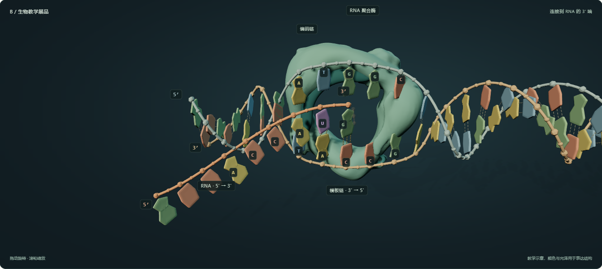
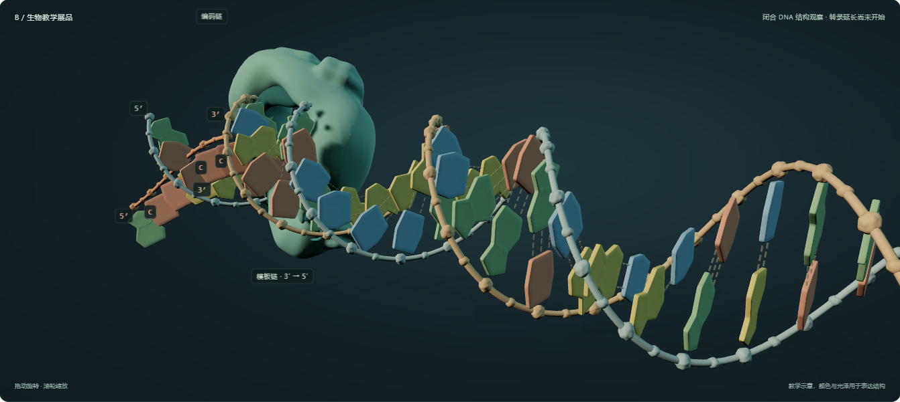
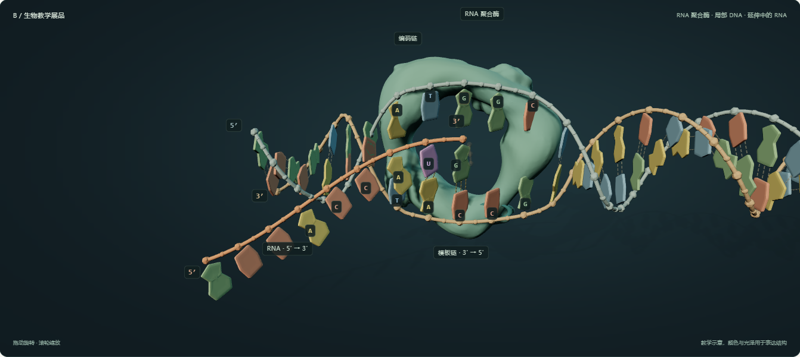
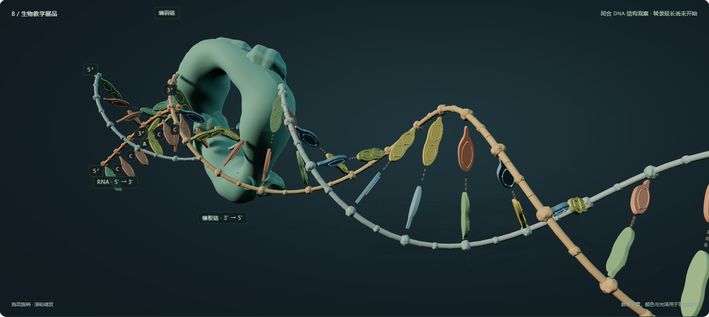
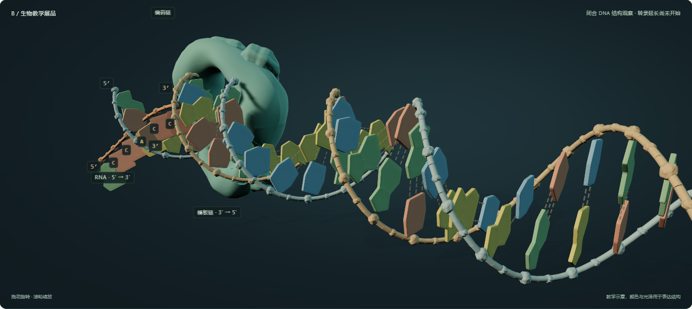
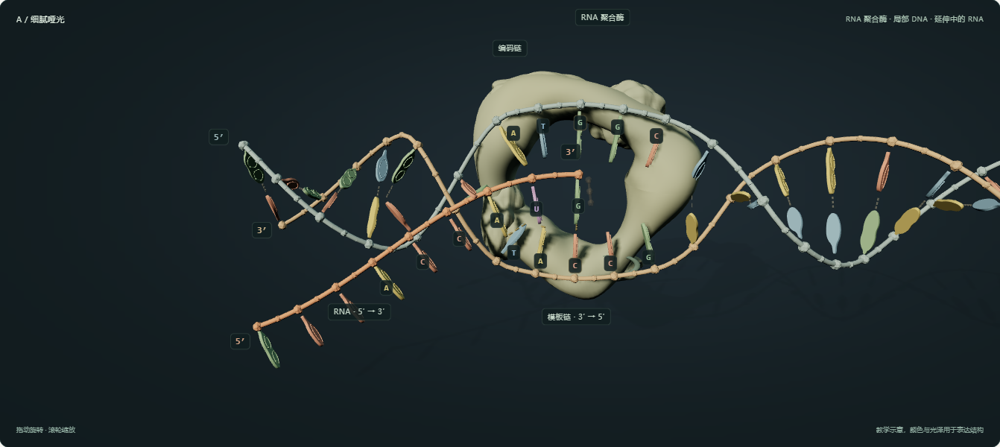
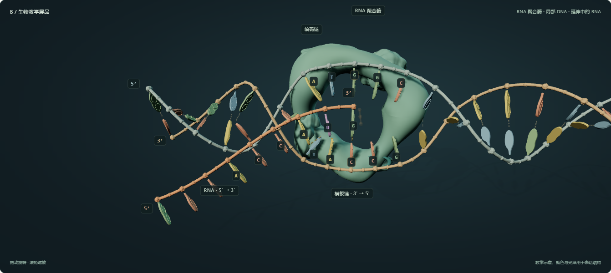
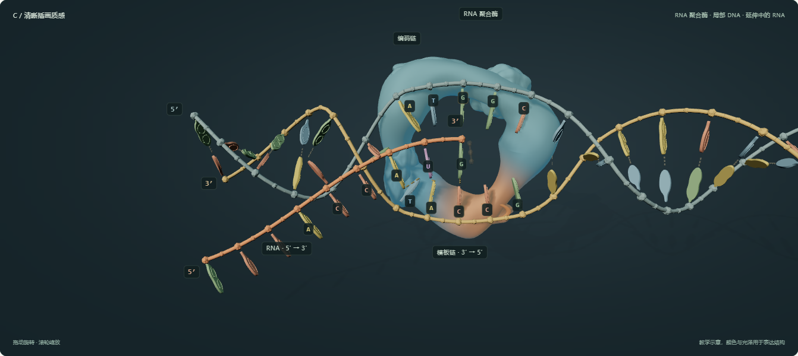

生物教学展品 · 模型与运动
看清结构，也看清接合。
观察通道层次与分子运动
切换保留当前视角与播放进度。
模型版本
环状碱基与大小沟为教学结构示意。
B / 生物教学展品RNA 聚合酶 · 局部 DNA · 延伸中的 RNA
拖动旋转 · 滚轮缩放教学示意，颜色与光泽用于表达结构
读取靠近与对准接入 3′ 端前移
虚线示意氢键：DNA 的 A–T 为两条、G–C 为三条；转录时模板 A 与 RNA 的 U 配对。RNA 骨架的实线连接表示链的延长。
展品新版 · 模型与表面对照
同机位 · 同时间 · B 方案
上一版精修7.30 s · 转录近景

展品新版7.30 s · 通道层次与连续骨架
上一版精修 · 闭合段0 s · 结构观察

展品新版 · 闭合段0 s · 曲线与表面层次
上一轮 · Blender 精修对照
同材质 · 同机位 · 同时间
精修前7.30 s · 结构修正版

Blender 精修7.30 s · 连续曲面与沟槽
精修前 · 闭合段0 s · 结构观察
Blender 精修 · 闭合段0 s · 结构观察
B 方案 · 结构修改对照
同材质 · 同机位 · 同时间
旧模型7.30 s · 叶片式碱基
 结构修正版7.30 s · 环状碱基与并列配对线
结构修正版7.30 s · 环状碱基与并列配对线

旧模型 · 闭合段0 s · 结构观察

结构修正版 · 闭合段0 s · 结构观察
上一轮材质样品
旧模型截图 · 统一 7.30 s

A · 细腻哑光温润、体块与沟槽

B · 生物教学展品边缘透光、前后层次

C · 清晰插画质感功能色区、投影辨认